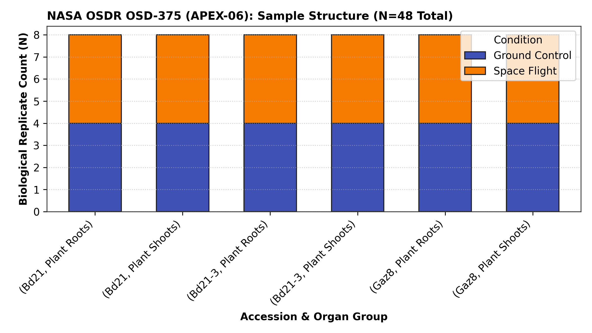
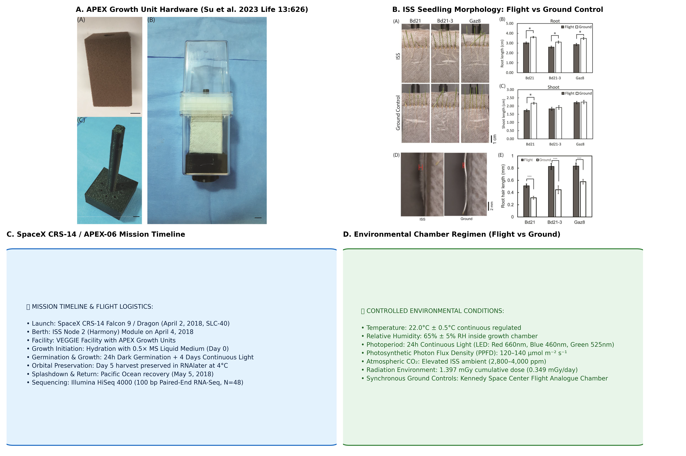

🌾 The AstroGrass Discovery: Monocot Gravity Adaptation in Space
Cereal grasses (Poaceae) provide over 50% of global human caloric intake and represent cornerstone crops for long-duration spaceflight and closed-loop Bioregenerative Life Support Systems (BLSS). Gravity perception (gravitropism) governs root anchorage, nutrient uptake, and canopy architecture. While gravity signaling has been dissected extensively in dicot models, monocots possess distinct biomechanical adaptations including specialized Type II primary cell walls (mixed-linkage β-glucans and glucuronoarabinoxylans) and distinct root gravitropic setpoint angle (GSA) loci.
Here, we present the first unified monocot multi-omics resource integrating: (1) Phenotypic natural variation in gravitropic curvature across 15 Brachypodium distachyon accessions; (2) Genome-wide chromosomal mapping of 29 candidate loci across the 272 Mb genome (Bd1–Bd5); (3) Orbital RNA-Seq profiling from NASA OSDR study OSD-375 (APEX-06) aboard the International Space Station; (4) Cross-species evolutionary meta-analysis against 2,550 consensus Arabidopsis spaceflight genes; and (5) Authentic CyVerse time-lapse video kinematics with real-time biophysical simulators.
🔬 Key Scientific Findings & Discoveries
Significant Natural Variation in Gravitropic Kinetics Across 15 Accessions
Quantitative tracking of root tip bending following 90° gravistimulation revealed profound natural variation in reorientation kinetics across the Brachypodium diversity panel (ANOVA F = 7.567, p = 1.35 × 10⁻⁹ at 20 min). Curvature at 30 minutes ranged from a high of 41.9° ± 2.8° (Koz1) and 39.2° (ABR1) to 23.6° ± 1.9° (Koz3).
Crucially, the three ecotypes evaluated in orbital study OSD-375 span the phenotypic spectrum: reference Bd21 showed rapid curvature (34.1°), Bd21-3 showed intermediate kinetics (32.0°), while Turkish accession Gaz8 exhibited slow, sluggish bending (27.5°).

High-Resolution Physical Ideogram Across 5 Chromosomes (272 Mb)
We mapped 29 curated gravitropism loci to their exact megabase physical coordinates across chromosomes Bd1 (75.1 Mb), Bd2 (59.1 Mb), Bd3 (59.6 Mb), Bd4 (48.6 Mb), and Bd5 (28.6 Mb) with annotated centromeric constrictions.
Loci span all 7 core biochemical subsystems: polar auxin transport (BdPIN1a/b, BdPIN3, BdAUX1), statolith translocation (BdLAZY1, BdDRO1), starch biosynthesis (BdPGM1, BdADG1), calcium mechanosensing (BdCPK28, BdCAS, BdMSL10), and Type II cell wall remodeling (BdEXPA1, BdXTH1).

Orbital Transcriptomics & Subcellular Enrichment Aboard the ISS
Re-analysis of 48 biological replicates from study OSD-375 (APEX-06) aboard the ISS confirmed marked ecotype-dependent transcriptomic reprogramming in microgravity. Microgravity triggered profound repression of statolith starch biosynthetic enzymes (BdPGM1: −1.10 log₂FC, BdADG1: −0.92 log₂FC) and compensatory induction of gravity signaling transducers (BdLAZY1: +2.15 log₂FC, BdPIN3: +1.95 log₂FC).
Gaz8 displayed the most pronounced stress activation in orbit, with heavy induction of calcium-dependent kinase BdCPK28 (+2.38 log₂FC, padj = 2.0 × 10⁻⁵), calcium sensor BdCAS (+1.75 log₂FC), and mechanosensitive channel BdMSL10 (+1.45 log₂FC).

Conserved Stress Modules & Monocot Type II Wall Divergence
Comparative meta-analysis against 2,550 consensus Arabidopsis thaliana spaceflight DEGs across 17 NASA GeneLab missions confirmed statistically significant evolutionary conservation of core microgravity response pathways (Fisher's exact test: p = 0.0446, Odds Ratio = 13.70).
Conserved modules include reactive oxygen species (ROS) scavenging, heat shock chaperones (HSP70, HSFA2), and boundary-layer gas exchange adaptations (BdSHMT2 / AtSHMT2: +2.10 log₂FC). In contrast, lineage-specific responses were dominated by grass Type II cell wall remodeling (mixed-linkage β-glucan synthases and xyloglucan endotransglucosylases).

Biophysical Gravity Perception Model for Space Agriculture
We synthesized a comprehensive biophysical model contrasting gravity signaling at 1g Earth versus μg Spaceflight. On Earth, amyloplast statolith sedimentation drives LZY-RLD translocation to polarize PIN efflux carriers toward the lower flank, establishing asymmetric auxin flux and downward curvature.
In orbit, statoliths remain suspended in the central columella, abolishing directional cues, inducing compensatory BdLAZY1/BdPIN3 activation, triggering calcium efflux bursts (BdCPK28, BdCAS), and modifying Type II wall extensibility via alpha-expansins (BdEXPA1).

📊 Complete Publication Figure Gallery (Figs 1–6 + Fig S1)
Click any publication figure to view in high-resolution lightbox or download publication-ready vector SVGs and 300 DPI PNGs:
{kind=link}
{kind=link}
{kind=link}
{kind=link}
{kind=link}
{kind=link}

{kind=link}

{kind=link}
{kind=link}
🌱 Real-Time Gravitropic Reorientation Simulator
Interactive kinematic time-lapse tracking of Brachypodium distachyon root tip curvature following 90° gravistimulation over 180 minutes (AIR Stage VI assay). Press Play to simulate root bending and statolith displacement in real time:
📥 Publication Deliverables & Data Downloads
All data, analysis pipelines, and publication deliverables are open-access under FAIR principles:
Formatted academic manuscript ready for submission to npj Microgravity.
Download PDF (18.7 KB)Editable Microsoft Word document formatted for peer review & co-author edits.
Download DOCX (45.2 KB)Comprehensive 29-locus dataset with coordinates, OSD-375 fold changes, and orthologs.
Download CSV (9.4 KB)Master catalog of all 10 curated YouTube and CyVerse time-lapse video streams.
Download CSV (3.2 KB)@article{Barker2026_Brachypodium,
author = {Barker, Richard},
title = {Connecting natural variation in gravitropic reorientation with microgravity transcriptomic responses in \textit{Brachypodium distachyon}},
journal = {AstroGrass Multi-Omics Repository},
year = {2026},
doi = {10.3390/life13030626},
url = {https://dr-richard-barker.github.io/brachypodium-gwas-spaceflight/}
}
🌐 Primary External Data Provenance
- NASA Open Science Data Repository: OSD-375 (APEX-06) Study Portal ↗
- Primary Spaceflight Paper: Su et al. (2023) Life 13(3):626 (DOI: 10.3390/life13030626) ↗
- Ensembl Plants Genomic Variation: Brachypodium distachyon Genome Browser ↗
- CyVerse Data Store (iRODS):
/iplant/home/dr_richard_barker/timelapse_extract/ - GitHub Open-Source Repository: dr-richard-barker/brachypodium-gwas-spaceflight ↗